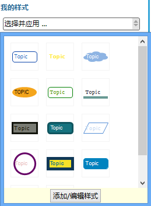
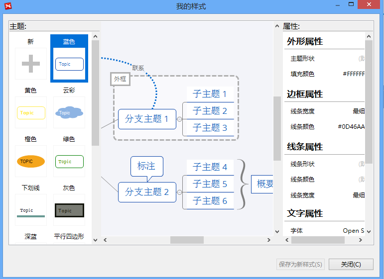

样式和样式编辑器
样式在XMind中是指图中某个主体的一系列设置配置的组合，譬如颜色，形状，大小等等。XMind专业版允许用户自己设计样式并提取。这样就可以反复使用。XMind的样式编辑器，一个帮助您更好更直观地设计样式的工具。
应用样式:- 选中一个或多个对象；
- 打开属性视图；
- 单击应用样式列表里的样式。

注意:
- 选中对象可以是一个主题、边框、联系。
- 一个对象一次仅能应用一种样式。
- 您可同时选中多个对象应用同一个样式。
提取并在样式编辑器重新设计样式
- 选中目标对象（主题，联系，边框，画布）；
- 在菜单栏选择“工具 - 提取样式”；
- 在弹出对话框设计样式。
- 主题: 外形属性、边框属性、线条属性、文字属性。
- 联系: 外形属性、线条属性、文字属性。
- 边框: 外形属性、线条属性、文字属性。
- 画布: 背景色、线条渐细、彩虹色、渐变色、墙纸、透明度。
- 单击“存为新样式”。


重新设计已有样式- 打开属性视图；
- 在“我的样式”下单击“选择并应用 - 添加/编辑样式”；
- 在样式编辑器对话框修改属性设置并点击“保存”按钮。